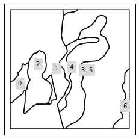
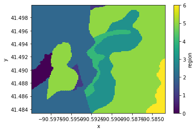

Example - Mapping Grid Data to Vector Data¶
[ ]:
!pip install regionmask
[1]:
import json
import geopandas as gpd
import regionmask
from geocube.api.core import make_geocube
%matplotlib inline
/home/snowal/miniconda/envs/geocube/lib/python3.6/site-packages/dask/config.py:168: YAMLLoadWarning: calling yaml.load() without Loader=... is deprecated, as the default Loader is unsafe. Please read https://msg.pyyaml.org/load for full details.
data = yaml.load(f.read()) or {}
/home/snowal/miniconda/envs/geocube/lib/python3.6/site-packages/distributed/config.py:20: YAMLLoadWarning: calling yaml.load() without Loader=... is deprecated, as the default Loader is unsafe. Please read https://msg.pyyaml.org/load for full details.
defaults = yaml.load(f)
[2]:
ssurgo_data = gpd.read_file("soil_data_group.geojson")
[3]:
ssurgo_data.head()
[3]:
| cokey | mukey | drclassdcd | hzdept_r | polygon | chkey | hzdepb_r | claytotal_ | sandtotal_ | silttotal_ | geometry | |
|---|---|---|---|---|---|---|---|---|---|---|---|
| 0 | 12577452 | 271425 | Somewhat poorly drained | 0.0 | POLYGON ((-90.59734968306211 41.4925450540834,... | 100034090 | 5.0 | 23.067675 | 9.978338 | 66.953987 | POLYGON ((-90.59734968306211 41.4925450540834,... |
| 1 | 12577452 | 271425 | Somewhat poorly drained | 5.0 | POLYGON ((-90.59734968306211 41.4925450540834,... | 100034090 | 15.0 | 23.067675 | 9.978338 | 66.953987 | POLYGON ((-90.59734968306211 41.4925450540834,... |
| 2 | 12577452 | 271425 | Somewhat poorly drained | 15.0 | POLYGON ((-90.59734968306211 41.4925450540834,... | 100034091 | 30.0 | 23.067675 | 9.978338 | 66.953987 | POLYGON ((-90.59734968306211 41.4925450540834,... |
| 3 | 12577452 | 271425 | Somewhat poorly drained | 30.0 | POLYGON ((-90.59734968306211 41.4925450540834,... | 100034092 | 45.0 | 23.067675 | 9.978338 | 66.953987 | POLYGON ((-90.59734968306211 41.4925450540834,... |
| 4 | 12577452 | 271425 | Somewhat poorly drained | 45.0 | POLYGON ((-90.59734968306211 41.4925450540834,... | 100034093 | 60.0 | 23.231643 | 9.961941 | 66.806416 | POLYGON ((-90.59734968306211 41.4925450540834,... |
Convert data to grid¶
[4]:
out_grid = make_geocube(
vector_data=ssurgo_data,
group_by='hzdept_r',
resolution=(-0.0001, 0.0001)
)
Group grid data by polygon¶
Create region mask based on input geometries¶
[5]:
numbers = range(len(ssurgo_data[ssurgo_data.hzdept_r==15].index))
names = ssurgo_data[ssurgo_data.hzdept_r==15].mukey.values
abbrevs = names
soil_region_geom = ssurgo_data[ssurgo_data.hzdept_r==15].geometry.values
soil_mask = regionmask.Regions_cls('SoilMask', numbers, names, abbrevs, soil_region_geom)
[6]:
soil_mask.plot()
[6]:
<cartopy.mpl.geoaxes.GeoAxesSubplot at 0x7fed2e0e9e48>

Create grid mask on soil data¶
[7]:
soil_grid_mask = soil_mask.mask(out_grid.sel(hzdept_r=15), lat_name='y', lon_name='x')
soil_grid_mask
[7]:
<xarray.DataArray 'region' (y: 165, x: 165)>
array([[2., 2., 2., ..., 5., 5., 5.],
[2., 2., 2., ..., 5., 5., 5.],
[2., 2., 2., ..., 5., 5., 5.],
...,
[2., 2., 2., ..., 6., 6., 6.],
[2., 2., 2., ..., 6., 6., 6.],
[2., 2., 2., ..., 6., 6., 6.]])
Coordinates:
* y (y) float64 41.5 41.5 41.5 41.5 41.5 ... 41.48 41.48 41.48 41.48
* x (x) float64 -90.6 -90.6 -90.6 -90.6 ... -90.58 -90.58 -90.58 -90.58
[8]:
soil_grid_mask.plot()
[8]:
<matplotlib.collections.QuadMesh at 0x7fed2dd27208>

Get the mean/median of each region using the masks¶
[9]:
grid_mean = out_grid.sel(hzdept_r=15).groupby(soil_grid_mask).mean()
grid_mean.coords['mukey'] = ('region', soil_mask.names)
grid_mean.to_dataframe()
/home/snowal/miniconda/envs/geocube/lib/python3.6/site-packages/xarray/core/groupby.py:758: FutureWarning: Default reduction dimension will be changed to the grouped dimension in a future version of xarray. To silence this warning, pass dim=xarray.ALL_DIMS explicitly.
allow_lazy=True, **kwargs)
[9]:
| hzdept_r | spatial_ref | hzdepb_r | claytotal_ | sandtotal_ | silttotal_ | mukey | |
|---|---|---|---|---|---|---|---|
| region | |||||||
| 0.0 | 15.0 | 0 | 30.0 | 23.067675 | 9.978338 | 66.953987 | 271425 |
| 1.0 | 15.0 | 0 | 30.0 | 23.000000 | 7.000000 | 70.000000 | 198692 |
| 2.0 | 15.0 | 0 | 30.0 | 26.000000 | 38.000000 | 36.000000 | 198754 |
| 3.0 | 15.0 | 0 | 30.0 | 14.000000 | 55.000000 | 31.000000 | 271431 |
| 4.0 | 15.0 | 0 | 30.0 | 5.000000 | 87.000000 | 8.000000 | 198714 |
| 5.0 | 15.0 | 0 | 30.0 | 12.000000 | 63.000000 | 25.000000 | 198750 |
| 6.0 | 15.0 | 0 | 30.0 | 21.000000 | 10.000000 | 69.000000 | 198724 |
[10]:
grid_median = out_grid.sel(hzdept_r=75).groupby(soil_grid_mask).median()
grid_median.coords['mukey'] = ('region', soil_mask.names)
grid_median.to_dataframe()
/home/snowal/miniconda/envs/geocube/lib/python3.6/site-packages/xarray/core/groupby.py:758: FutureWarning: Default reduction dimension will be changed to the grouped dimension in a future version of xarray. To silence this warning, pass dim=xarray.ALL_DIMS explicitly.
allow_lazy=True, **kwargs)
[10]:
| hzdept_r | spatial_ref | hzdepb_r | claytotal_ | sandtotal_ | silttotal_ | mukey | |
|---|---|---|---|---|---|---|---|
| region | |||||||
| 0.0 | 75.0 | 0 | 90.0 | 24.564966 | 10.120497 | 65.314537 | 271425 |
| 1.0 | 75.0 | 0 | 90.0 | 23.000000 | 7.000000 | 70.000000 | 198692 |
| 2.0 | 75.0 | 0 | 90.0 | 26.000000 | 38.000000 | 36.000000 | 198754 |
| 3.0 | 75.0 | 0 | 90.0 | 8.333333 | 74.666667 | 17.000000 | 271431 |
| 4.0 | 75.0 | 0 | 90.0 | 7.800000 | 86.466667 | 5.733333 | 198714 |
| 5.0 | 75.0 | 0 | 90.0 | 12.000000 | 63.000000 | 25.000000 | 198750 |
| 6.0 | 75.0 | 0 | 90.0 | 21.000000 | 10.000000 | 69.000000 | 198724 |
[ ]: